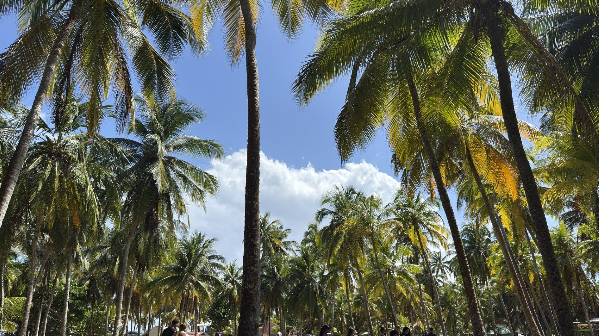

The Freescape Project
Julia & Sergen · Ein Jahr durch Südamerika 🌎
Zur Website
Startseite & alle Infos
Neuestes Video ansehen
YouTube · The Freescape Project
Reiseblog
Guides, Kosten-Checks & Erfahrungen
Live-Reisekarte
Unsere Route & aktueller Standort
Länder-Guides
Kolumbien · Ecuador · Peru
Foto-Galerie
Unsere schönsten Momente
Über uns
Wer wir sind & warum wir reisen
Kontakt & Kooperationen
Fragen, Presse & Zusammenarbeit